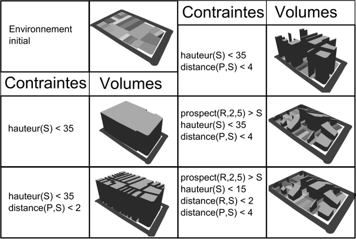
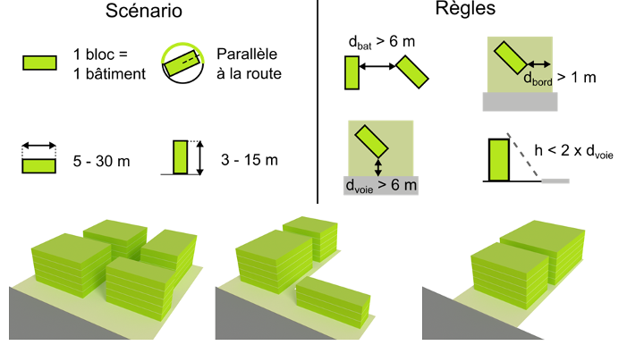
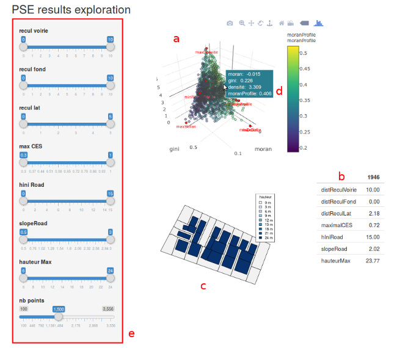
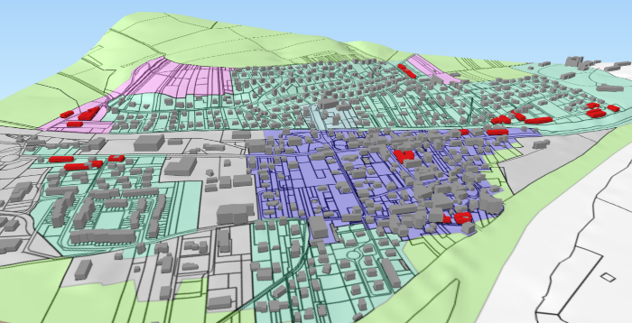

Simulation de l’extension urbaine pour l’aide à l’assistance aux politiques publiques
La ville évolue et son évolution est régie par un ensemble de documents d'aménagement. L'évaluation de l'influence de ces documents d'aménagement est un enjeu important pour garantier un meilleur développement de la ville. À l'échelle locale, le PLU (Plan
Local d'Urbanisme) définit la constructibilité à l'échelle de la parcelle à travers un ensemble 3D de contraintes notamment morpologique (Par exemple, hauteur maximale d'un bâtiment, densité maximale, etc.). La simulation des PLU permet de donner
une évaluation de la constructibilité à l'échelle de la parcelle et peut permettre d'assister son concepteur afin de déterminer les paramètres de règles les plus adaptés et de détecter d'éventuels effets de bord.
À travers mes travaux de recherche, j'ai proposé différentes méthodes d'évaluation de la constructibilité. Ces évaluations proposent des formes bâties qui donnent une indication sur le potentiel constructible. Il s'agit d'une information
statique que j'ai été amené à coupler avec des simulateurs d'évolutions urbaines afin de proposer des systèmes permettant de simuler une évoloution multi-échelle des territoires et de fournir des outils permettant l'assistance à la rédaction
de documents d'aménagement intégrant ces différentes échelles. Cette page reprend les propositions de recherche que j'ai effectuées :
- Génération d'enveloppes constructibles
- Simulation de formes bâties
- Assistance à la paramétrisation de PLU
- Simulation des évolutions territoriales multi-échelles
Génération d'enveloppes constructibles
Une première proposition est la génération d'enveloppes constructibles. Ces enveloppes représentent le plus gros volume théoriquement constructibile à partir des règles morphologiques du PLU. Tout bâtiment inclus dans cette enveloppe respecte les règles
qui ont permis sa génénration. Ce type d'approche peut être utile pour l'assistance aux architectes ou l'aide à l'instruction de permis de construire.
L'enveloppe est générée grâce aux opérateurs géométriques 3D et un démonstrateur est disponible sur le dépôt Gihtub d'applications de GeOxygene 3D.
Sélection de publications
- Brasebin, M., Perret, J. and Haëck, C. (2011) Un système d'information géographique 3D pour l'exploration des règles d'urbanisme - application à la constructibilité des bâtiments, Revue Internationale de Géomatique,
vol. 21, n. 4, pp. 533--556
- Brasebin, M., Perret, J. and Haëck C.(2011) Towards a 3D geographic information system for the exploration of urban rules: application to the French local urban planning schemes, 28th urban data management symposium
(UDMS 2011)

Génération de différentes enveloppes constructibles avec différentes valeurs de règles (Brasebin, 2011)
Génération d'enveloppes constructibles
Comme les enveloppes constructibles, ne représentent pas des bâtiments et ne permettent pas d'intégrer certaines règles d'urbanisme, mon travail de thèse a visé à concevoir une méthode permettant la génération de formaes bâties à partir de règlements
de PLU. Mes contributions principales sont : la modélisation du règlements d'urbanisme et des éléments géomgraphiques associés, ainsi qu'une méthode de génération de formes bâties. Cette méthode se base sur une technique d'optimisation multi-dimensionnelle
qui vise à proposer une forme composée d'un certain nombre d'objets paramétriques. Le système détermine à la fois le nombre de ces objets (ce qui permet de modéliser des formes plus ou moins complexes), mais également leurs emplacements et dimensions.
Cette méthode peut aider à la conception de PLU en testant différents scénarios ou à l'évaluation de la constructibilité.
Le résultat de ce travail est déposé en OpenSource comme le projet SimPLU3D .
Sélection de publications
- Brasebin, M., Perret, J., Mustière, S. and Weber C. (2016) A Generic Model to Exploit Urban Regulation Knowledge, ISPRS International Journal of Geo-Information, vol. 5, n. 2, pp. 14, doi:10.3390/ijgi5020014
- Brasebin, M., Perret, J., Mustière, S. and Weber C. (2016) 3D urban data to assess local urban regulation influence, Computers, Environment and Urban Systems, 2017, ISSN 0198-9715, https://doi.org/10.1016/j.compenvurbsys.2017.10.002.

Génération avec un même jeu de paramètres de différentes parcelles
Assistance à la paramétrisation de PLU
Le nombre de paramètres nécesaires à la description d'un PLU étant très important, il n'est pas envisageable de tester l'ensemble des valeurs possibles pour choisir le meilleur scénario. Afin de produire des outils opérationnels, il est nécsesaire de
mettre en place des stratégies d'exploration pour sélectioner un ensemble de scénarios d'intérêt. En partenariat avec l'Instut des Systèmes Complexes Paris-Ile de France, nous concevons une plateforme (dont le resultat est testable en ligne)
qui permet de réaliser cela. Des expérimentations sont en cours avec des collectivités pour implémenter des problématiques réelles dans ce système.
Les résultats simulés sont produits grâce au couplage entre SimPLU3D et la plateforme d'exploration de modèles OpenMole. Les scripts développés et les données sont disponibles dans le projet
SimPLU3D-OpenMole .
Sélection de publications
- Brasebin, M., Chapron, P., Chérel, G., Leclaire, M., Lokhat, I., Perret, J. and Reuillon, R. (2017) Apports des méthodes d’exploration et de distribution appliquées à la simulation des droits à bâtir, Actes
du Colloque International de Géomatique et d'Analyse Spatiale (SAGEO 2017)
- Chapron, P., M. Brasebin, J. Perret and R. Reuillon (2017) Exploration de l’influence de la réglementation urbaine locale sur la morphologie des formes bâties par simulation distribuée, 13e rencontres ThéoQuant.

Interface de consultation des configurations sélectionnées (Chapron, 2017)
Simulation des évolutions territoriales multi-échelles
La constructibilité est une composante de l'évolution des territoires. Ainsi, un enjeu de recherche pour assister les politiques publiques est d'intégrer ce simulateur au sein d'autres systèmes modélisant les évolutions territoriales. Dans le cadre de
l'encadrement de la thèse de Maxime Colomb (débutée en 2015), nous nous sommes intéressés à évaluer la compatibilité entre deux échelles de documents d'aménagement : Le PLU et le SCOT qui
définit des objectifs en termes de logements par commune et par zone. L'objectif de ce travail est de montrer dans quelle mesure les collectivités peuvent s'appuyer sur des simulateurs pour évaluer leurs politiques publiques.
Pour évaluer cela, nous avons réalisé un couplage de SimPLU3D avec MupCity, qui simule les emplacements propices à l'urbanisation à l'échelle du SCOT.
Sélection de publications
- Colomb, M., Brasebin, M., Perret, J. and Tannier, C. (2017) Couplage de deux modèles de simulation (MUP-City et SimPLU) pour évaluer l'articulation entre différentes échelles de documents d’urbanisme, 13e Rencontres
de Théo Quant , pp. 5
- Colomb, M., Brasebin, M., Perret, J. and Tannier, C. (2017) Simulation of a realistic residential development with the integration of two existing models, 13e rencontres ThéoQuant.

Simulation d'un développement résidentiel compact (Collomb, 2017)